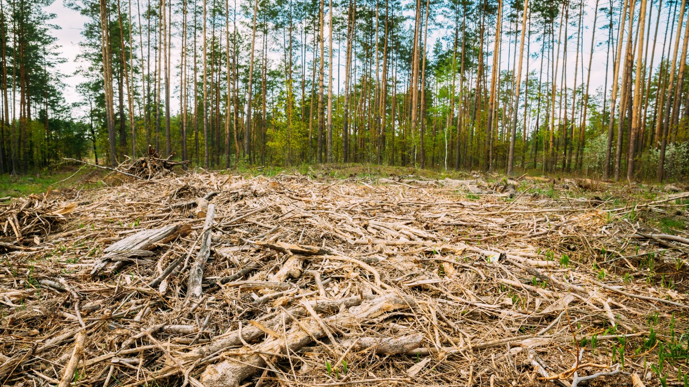

Deforestation and Land Degradation
Deforestation and land degradation are environmental issues caused by human activities, leading to habitat loss, reduced biodiversity, and soil erosion, affecting ecosystems and climate stability.
Deforestation
Deforestation is the large-scale removal of forests, often for agriculture, urban development, or logging. It leads to habitat loss, biodiversity decline, and contributes to climate change.
Land Degradation
Land degradation refers to the decline in the quality and productivity of land due to factors like deforestation, overgrazing, pollution, and improper farming practices, impacting ecosystems and food security.
Consequences of Deforestation and Land Degradation
Deforestation and land degradation lead to biodiversity loss, climate change, soil erosion, water cycle disruption, reduced agricultural productivity, and increased flooding, harming ecosystems and communities.

Solutions to Deforestation and Land Degradation
Solutions to deforestation and land degradation include reforestation, sustainable agriculture, promoting conservation, soil restoration techniques, enforcing environmental policies, and encouraging eco-friendly practices to protect ecosystems and improve land health.